General Operations
Overview
In this section, you will learn how to create, share, and export UML Class Diagrams in Moqups.
The section is divided into three main tasks: creating a document, sharing a document, and exporting a document.
By the end of this section, you will be able to manage your UML Class Diagrams effectively, collaborate with others, and prepare your work for submission or review.
Create a Document
Before building a UML Class Diagram, you need to create a new project in Moqups.
-
Click the [+] button to create a new project.
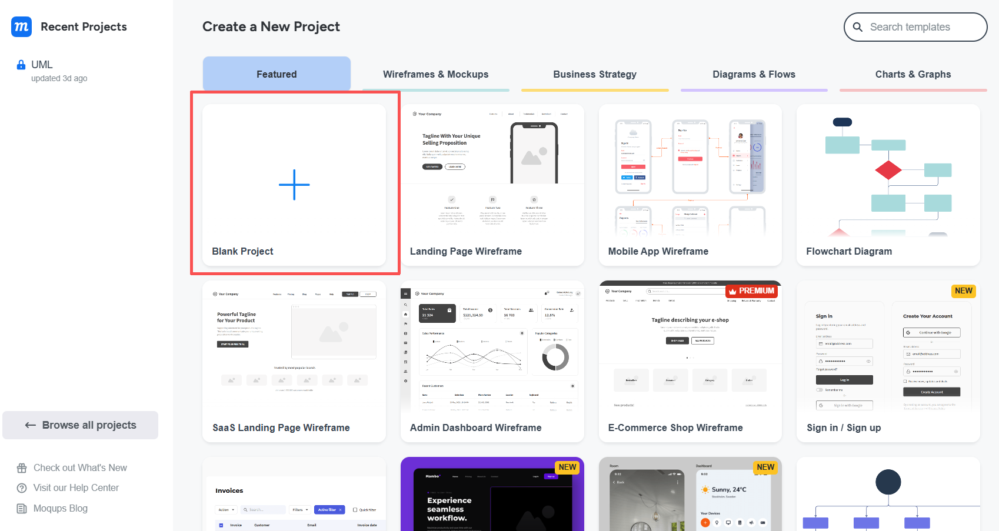
-
Enter a project name (e.g., UML Class Diagram) in the Create New Project window.
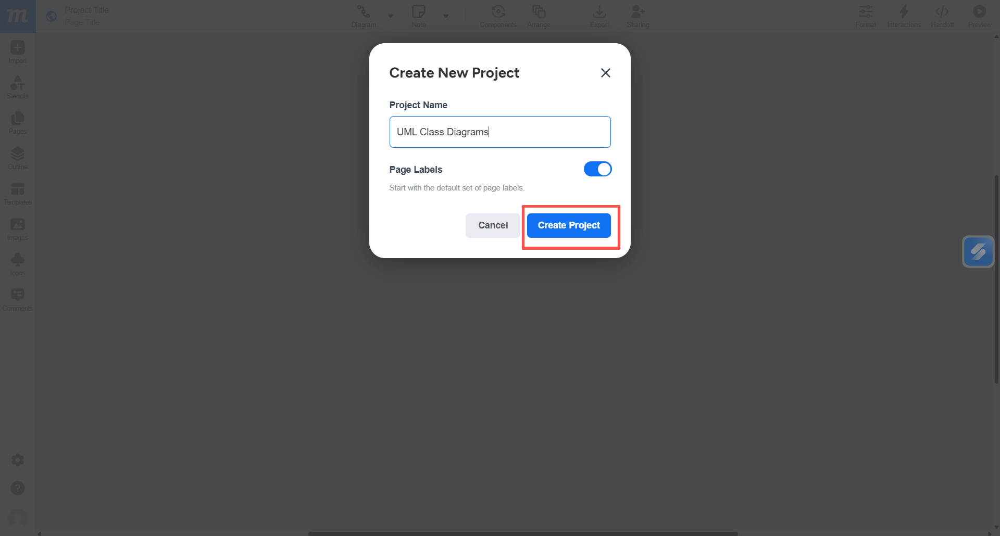
-
Click [Create Project] to open the workspace.
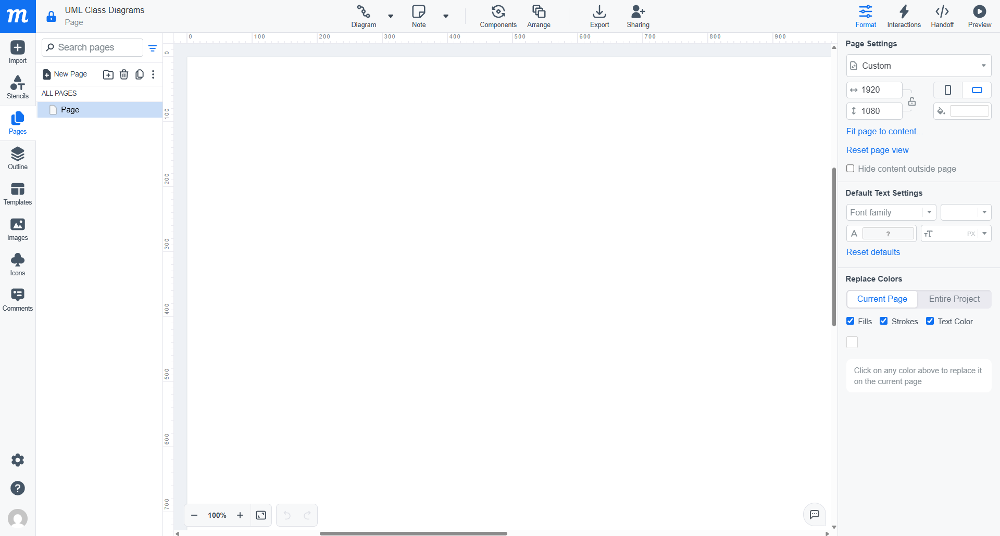
Success
You have now successfully created a blank diagram.
Note
You can also create a new project by clicking the Moqups logo in the top-left corner and selecting [New Project] from the dropdown menu.
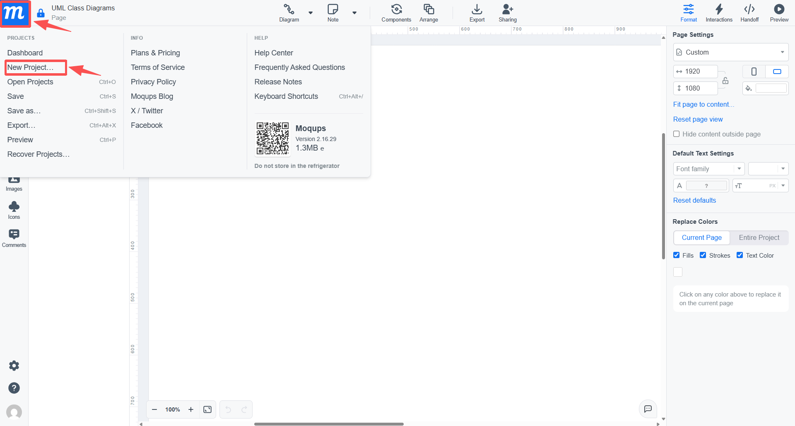
Share a Document
You can share your UML Class Diagram with classmates or instructors for collaboration or feedback.
To open the sharing panel:
-
Click [Sharing] in the top menu or use the shortcut (Ctrl + Alt + E)
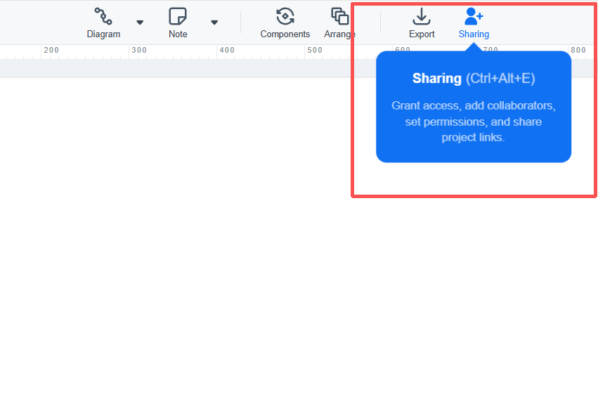
Option 1: Sharing via a link
You can generate a shareable link and send it to others.
- Locate the project link section in the Share with Others window.
- Click [Copy link].
-
Send the link to others.
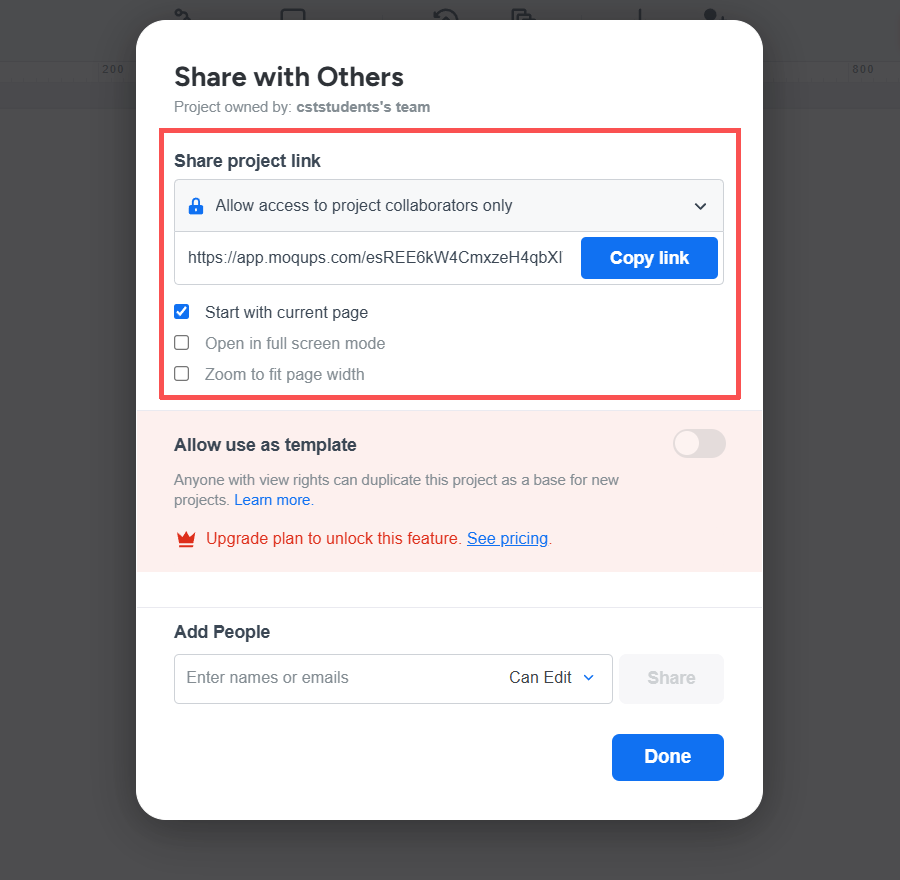
Note
"Anyone with the link can view" allows anyone with the link to access the UML Class Diagram.
"Allow access to project collaborators only" restricts access to invited users only (added through email).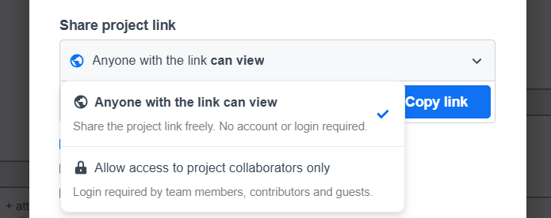
Option 2: Sharing via email
You can invite specific users by email.
- Enter the email address in the Add People section.
- Choose a permission level (e.g., Can Edit or Can Comment).
-
Click [Share].
Note
"Can Edit" allows users to modify the UML Class Diagram, while "Can Comment" only allows feedback.
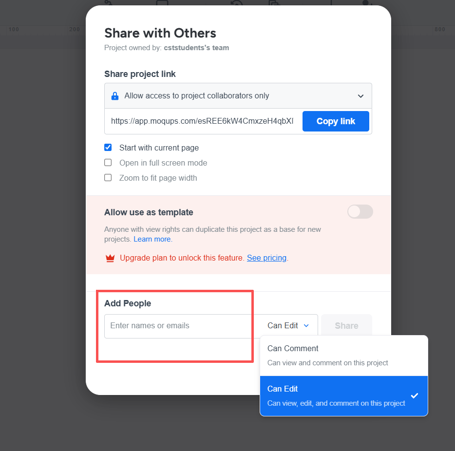
After sending the invitation, the added user will appear in the collaborators list with the assigned permission.
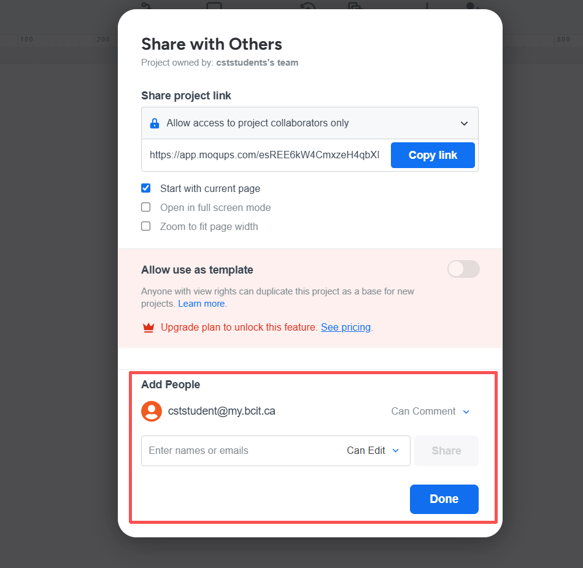
Success
The document has been successfully shared with the selected user.
Note
After adding a collaborator, you can change their permission level (e.g., Can Edit or Can Comment) or remove them from the project.
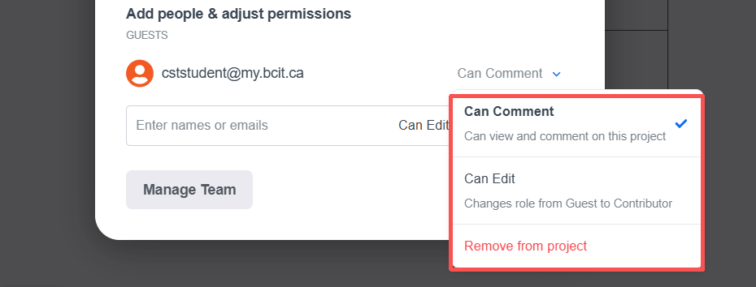
Export a Document
After completing your UML Class Diagram, you can export it for submission, printing, or sharing.
There are multiple ways to open the export menu:
- Click [Export] in the top menu.
- Click the Moqups logo in the top-left corner and select [Export] from the main menu.
-
Use the shortcut (Ctrl + Alt + X).
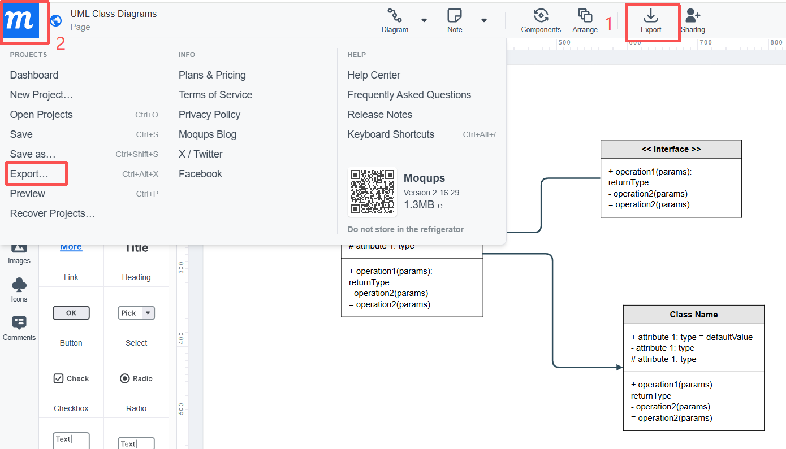
Once the export panel is open, you can choose from different formats:
-
PNG: Export your UML Class Diagram as an image. This is suitable for quick sharing.
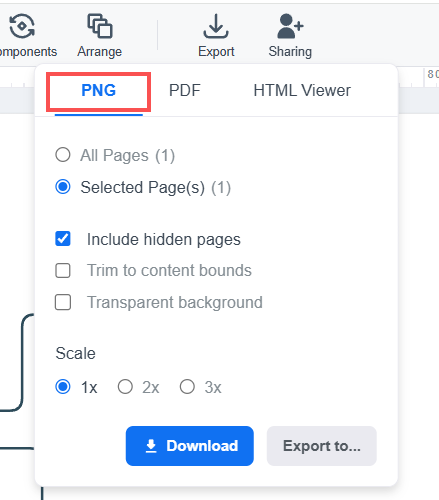
-
PDF: Export your diagram as a document file. This is recommended for assignment submission.
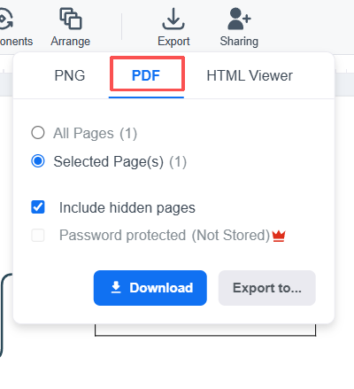
-
HTML Viewer: Export an interactive version of your diagram for viewing in a browser.
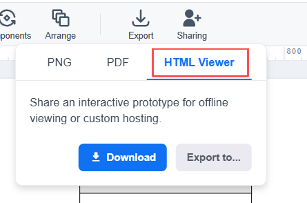
After selecting a format:
- Choose whether to export all pages or only selected pages.
- Adjust optional settings if needed (e.g., scale or layout).
-
Click [Download] to save the file.
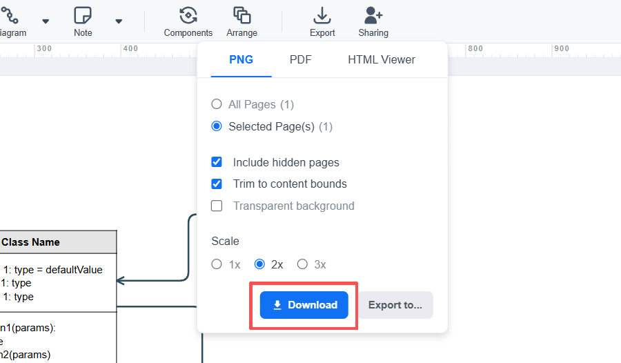
Success
Your UML Class Diagram has been successfully downloaded to your device.
You can also export your UML Class Diagram to cloud storage services such as Google Drive or Dropbox by selecting [Export to...].
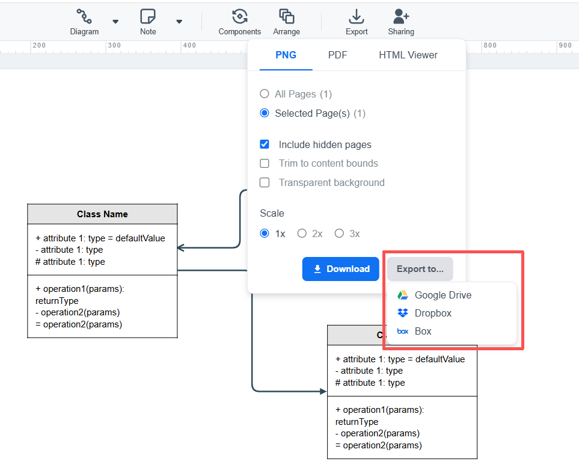
Note
Saving to cloud storage is useful for accessing your UML Class Diagram from different devices or sharing it easily.
Conclusions
In this section, you learned how to create a project, share your UML Class Diagram with others, and export it in different formats. These core operations allow you to effectively manage your work, collaborate with teammates, and prepare your diagrams for submission or presentation. With these essential skills, you are now ready to work more efficiently within Moqups.